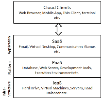
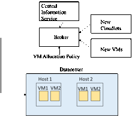
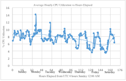
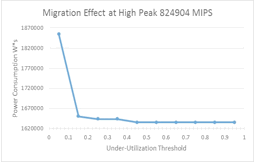
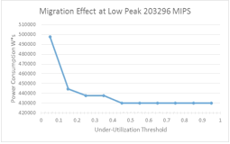

Green Computing and
the Efficacy of Under-Utilization Threshold VM Migration: A Real-World Example
Rohit Dewan
Green Computing and the Efficacy of Under-Utilization Threshold VM Migration
A Real-World Example
Today, at an ever-increasing rate, we see the rapidity with which cloud computing is being introduced around us. Cloud computing is present in an increasing variety of modes. Be it sensor networks, household items being optimized to be ‘smart,’ mobile applications, or server farms performing quick on-the-fly back-end operations for online behemoths such as Amazon, Google, Microsoft, etc., the presence of the cloud has substantially increased in the environment around the average user, both in the corporate and personal environments. For the past decade, ever since the advent of the smartphone, mobile applications, or ‘apps,’ as they are colloquially known, have taken off, making full use of information stored on the internet for quick and agile response to on-demand requests from customers. Whether it is finding food nearby, making a real-time phone call over VOIP, or ordering a product from online shopping, all of these applications make use of quick computing from a massive trove of data which is stored on the internet. By storing this information on the cloud, it is accessible anytime, anywhere, so long as the device is connected to the internet, where through multiple backup clouds even if one fails there is still a way to provide service to a consumer.
Further, increasingly, not only developers, but common people, are using clouds for personal use as well. With Apple’s iCloudÔ and similar such products, individual users are able to maintain a private realm where they may share an increasing amount of pictures, videos, multimedia, etc. with family members and friends. As these forms of multimedia become increasingly space consuming over time, with High-Definition video formats and the like taking gigabytes and even terabytes of space for storage, storing them on the cloud provides ease of use to both the user and those with whom they desire to share these files, where instead of dragging a hard drive around to give files to potentially multiple users through several lengthy transfers, obtaining them is as simple as uploading for the user and clicking a button for download for people interested in viewing them. In the consumer-product realm, household items from small items like toothbrushes, lightbulbs, to big durable items like cars and other motor vehicles, are increasingly making use of cloud computing to be able to report statistics in real-time and give the user feedback of the use of their item which helps efficient use and creates an informed user-base. In this way, the Internet of Things has increasingly emerged from a far-fetched concept to enter the realm of reality as more and more physical devices are digitized through electronics and interconnected through the internet.
Having established the increasingly pervasive presence of cloud computing in the lives of the common man, it is then important to look at the infrastructure that lies behind the cloud, as it is not some amorphous entity but rather powered by networks of physical machines having a finite capacity. Behind each of the services previously mentioned there are firstly software developers which through their developed code harness the manipulation of the stored data and report it in a format which adds value for an end-user in a marketable model, and secondly there are infrastructure providers through which the software developers are able to access the massive amounts of data stored on physical machines. In this regard, we feel it is helpful to think of cloud computing as a utility, where there are cloud system providers and cloud system users [4], and that is the approach taken in this paper.
If we think of cloud computing as a utility, it would then make sense that infrastructure providers would seek to provide infrastructure at on-demand pricing based on usage patterns, for maximal optimization according to simple supply-demand economics, as any service provider (e.g. gas, electricity, etc.) would naturally do. If we observe the previous examples stated, from the infrastructure point of view the emerging pattern is that on the one hand there is a cloud infrastructure service provided by big companies such as Amazon, Google, or Microsoft [1], which is able to host information as well as programs and has the computational processing power through many clusters of hosts/servers to support many users at the same time, and on the other hand there may be software developers which act as users in using this service to forego overhead and set-up costs, and innovatively are able to deliver the respective applications to the common end-user such as smart consumer durables, mobile applications providing location-based services, and more.
In providing such a utility, infrastructure providers and software developers both stand to gain from increased efficiency of use of the CPU computational power for running applications that make use of stored data over the cloud. One host/server which runs several virtual machines, where said host/server is unutilized or underutilized, may be migrated to another host, thereby consuming power and providing energy savings [1]. In this manner much can be achieved. Where upwards of $4.6 billion are used in energy costs for cloud-computing infrastructure in the US every year resulting in substantial CO2 emissions into the environment [1], through efficient management of both demand and power including efficient paradigms for managing unutilized or underutilized hosts and migrating their virtual machines, this amount may be reduced where savings can be passed on to the software developer user, the end-user of the software, as well as reducing CO2 emissions into the environment, providing for a desirable situation.

Fig. 1. Types of services provided to cloud clients [2].
With its given background as an emerging technology, it is essential to first examine the dichotomy of cloud computing. As shown in Fig. 1, there are three fundamental categories of services offered within cloud computing, including software as a service (SaaS), platform as a service (PaaS), and infrastructure as a service (IaaS) [2]. As is indicated by the name, software as a service exclusively describes cloud hosting for software applications where the software is centrally hosted, and in turn may be accessed by users through the use of a thin client via a web browser, mobile application on their phone, etc. [2]. Platform as a service describes where the cloud serves as a platform in itself, where application developers do not need to worry about maintaining physical infrastructure, and where in addition to a centrally hosted application there is the presence of infrastructure typically associated with developing that application, such as an operating system, programming environment, application engine, etc. [2]. Finally, infrastructure as a service describes where virtualization, or virtual versions of critical computer resources, such as memory, storage, and virtual machines, may be provided to users of those resources [2].
To then provide all these types of
services with high efficiency at minimal cost to service providers in on an
on-demand type of model, in line with modelling the coud as a utility as it
comes more and more into use as previously explained, it is imperative that
paradigms to provide said services be designed efficiently
and undergo rigorous testing before they are used, where in each scenario the
users of the cloud may have different requirements for developing their
software, use of a platform, or use of infrastructure, respectively.
In looking at ways
to achieve testing of the services being offered through the cloud, one may
first think that it may be possible to test such services within the cloud
itself, in a real cloud environment.
However, in doing so a potential tester would encounter a host of
problems. Firstly, because of the
sheer vastness of the cloud, this is currently unfeasible because a real cloud
system typically comprises a vast array of interconnected networks in a
transient state, where conditions are constantly changing, such as varying
demand, supply, and dedicated resources [4]. Further, as mentioned each user may have
different service requirements as well.
In addition, testing in a real cloud environment due to its transient
nature and because of immense infrastructure costs confines a tester to a
limited cluster of servers for testing, where testing on such a microscale
would be different from clusters on other parts of the cloud, and thus results
found through such testing may not be widely reproducible [4]. Finally, due to its transient nature, it
is hard to control for variables and/or manipulate variables in a controlled
environment, making it hard to isolate a single variable for testing.
In dealing with all
of these problems among others, to measure the performance of potential
paradigms and pre-evaluate them prior to deployment, simulation has been
increasingly used as a potentially viable method [2]. Using a simulator presents numerous
benefits. For one, because the
simulation of the entire cloud can occur on only one node, the physical
infrastructure cost is very less when compared when testing in a real cloud
environment [4]. Secondly, in
experimenting with potential paradigms through simulation a repeatable and
controllable environment can be obtained, where testing may occur numerous
times [2] and by targeting variables in isolation due to controls in place
through the simulation, which may not have been possible in the real cloud due
to its transient nature.
Nearly all
simulators to date have been based upon the most popular simulator tool
available, called CloudSim, an event driven simulator
written in Java using OOP [2]. CloudSim offers several unique features for modeling
physical Cloud computing infrastructure, including entire data centers, which
typically host hundreds to thousands of servers, on a single node [4].
The way CloudSim is able to emulate such a vast infrastructure is
through using virtualization. It
extends the prior Java libraries of SimJava and GridSim, which form the first two layers in the CloudSim hierarchy [4]. SimJava at the
lowest layer primarily gives support for discrete event simulation, which is
instrumental in creating system components, communication between them,
managing the timing of everything including the queuing, processing, and clock
management, etc. At the next layer GridSim provides a model for the Grid, which comprises
resources, data sets, etc. Then, at
the next layer, building upon these two, CloudSim is
implemented as a virtualization engine, where it utilizes the first two layers
to create specific Cloud infrastructure-oriented components such as a data
center, dedicated Virtual Machine (VM) management, provisioning for CPU,
memory, and storage for hosts and VMs, and manages the instances of all these
components during the simulation [4].
In particular, once these components are defined, CloudSim
manages first how to provision which hosts to which VMs, and how to provision
applications (which are called Cloudlets) to different VMs, where both modes of
provisioning can occur on a time-shared basis (where two entities, whether the
entities be VMs or Cloudlets inside the VMs, can be run at the same time) or on
a space-shared basis (where the entities must queue and wait for a CPU to be
finished with the earlier entity before they can be operated on) [4].

Fig. 2. Component interaction in the CloudSim environment.
The
interaction of several of the CloudSim system’s major
components is shown in Fig. 2.
The Datacenter component comprises a number of hosts (which is
customizable), where the hosts may have their own specifications such as a
specific amount of RAM allocated, a number of cores, and processing elements
per core, bandwidth allocation, etc. [4].
The hosts are allocated virtual machines by the Broker components, which
essentially acts as a mediator between users (where users in this case are
software developers) and the infrastructure service provider. The Broker here has several roles. First, initially, the Datacenter, since
there may be several, registers under the Central Information Service (CIS),
where the CIS serves as a lookup table for the broker when finding a suitable
cloud for running a user’s applications.
Second, for each Datacenter, there is the VM component, which models an
instance of the virtual machine, wherein the Broker deploys VMs to hosts
through the use of a component called a VM Allocation Policy, wherein the VM
has its own specifications of CPU, RAM, bandwidth allocation etc. (being less
powerful than the host’s specifications for it to be able to be allocated to a
host), where the VM is managed during its lifecycle by the host [4]. Finally, when the user has a Cloudlet
which he/she needs to run, the broker looks up a suitable datacenter through
the CIS, and then allocates the Cloudlet to a VM within the datacenter through
a VM selection policy, and deploys Cloudlets to suitable VMs for them to run
on, according to the VM scheduling policy of time-shared or space-shared, as
mentioned above [4]. Finally, at
the top layer is the User Code, where through the OOP nature of CloudSim, its user interface structures are extendable, and
for instance a user seeking to define a custom configuration for allocation of
VMs to hosts or Cloudlets to VMs simply needs to extend the respective
provisioning functionality and define his own variables, methods, and/or
functions [4].
In order
to model physical infrastructure cloud environments through simulations in a
virtualization engine, it is helpful to obtain information about the physical
infrastructure and CPU utilization of current cloud service providers. However exact specifications are often
not given by rpoviders themselves. For example, Amazon EC2 runs each of its
five classes of instances (standard and micro instances, high-memory instances,
cluster compute instances and GPU instances) on separate types of hardware,
where the underlying hardware is often not reported [1]. H. Liu attempted to determine the
underlying hardware through VM probing, and found that for Amazon EC2 standard
instances, including m1.small, m1.medium, m1.large,
and m1.xlarge, the type of physical server has a single socket Intel Xeon E5430
4-Core 2.66 GHz processor [1].
Second is
the type of VM setups which can be run on the underlying physical
hardware. Through the VM probing
mentioned above, researchers also found through a CPU temperature measuring
algorithm that the CPU utilization for specific standard Amazon EC2 instances
was able to be determined [1]. In
particular, referring to the smallest instance, the m1.small
instance, has one virtual core and is called 1 EC2 Compute Unit (ECU), where it
was found through probing that a host has approximately 10 times the capacity
of an ECU [1]. The largest instance
is the m1.xlarge instance which comprises 8 ECU,
wherein as with our simulation, Amazon caps the EC2 to the maximum CPU
specified, where an instance cannot use more than its allocated ECU [1]. Further,
using the VM probing algorithm, the average utilization for a cluster of 20
hosts running Amazon EC2 standard instances on the physical hardware mentioned
above in terms of CPU utilization per hour, for the period of a day, was also
able to be determined [1]. Through
this valuable information, certain physical parameters of real life Cloud
Datacenters can be gleaned for use in virtualization systems such as CloudSim, etc.
In finding more
efficient paradigms for CPU utilization, green computing may also be
incorporated. Although the average
utilization of a Datacenter is less than 20%, because of poor VM migration
policies and the like a large amount of energy is wasted on idle resources [3]. In particular, even for a very low load
such as 10% CPU utilization, power is consumed at over 50% of the peak power
[3], so this means that if a CPU is being utilized where power instead could saved, such as when VMs are not being migrated to different
hosts where they could be, then a lot of power is being lost that could instead
be saved.
One such method where VMs can be migrated to different hosts is called live migration theory, where it can be done for under-utilized or over utilized hosts [3]. For under-utilized hosts, they are migrated to hosts which have enough capacity to contain the migrated host (where the new host may even be another under-utilized host), where the host from which the VMs migrated can then be switched off to eliminate idle power consumption [3]. For over-utilized hosts, which have already exceeded their utilization capacity, some of the VMs of said host may be migrated to hosts which are underutilized to reduce utilization which in turn reduces the CPU temperature and increases the performance of the host [3].
From the information known about cloud computing, specifically concerning the idling of resources, the resource management of cloud computing and its consumption of energy sources will pose to be a big area of concern in the future. As mentioned upwards of $4.5 billion dollars are spent on IT infrastructures a year by the US alone, where the average resources utilization of a Datacenter is 20% [3]. We feel there is a big scope for the presence of green computing paradigms and in particular VM migration algorithms which may help to alleviate this burden.
In particular, when we know that even at a very low load, such as 10% CPU, that the power consumed is over 50% of the peak power [3], then for every computer that is not migrated when it can be, by simple subtraction we know at least 40% CPU peak power extra is being consumed, where this would then form a substantial amount of money being spent on IT infrastructure. Particularly at the massive scale at which Datacenters operate, where Datacenters often host hundreds to thousands of servers [4], the effect of even a little change in design of paradigms for VM migration can have huge consequences on a very large scale.
We feel it is worth it then to take an approach where we seek to test for an ideal under-utilization threshold for a green computing algorithm [3]. In this case, the threshold at which the CPU is underutilizing its capability may be varied in a controlled environment (e.g. for running a particular number of Cloudlets allocated to a particular number of VMs allocated to particular hosts in a Cloud Datacenter), where when a host’s CPU utilization for running the respective VMs is under the manipulated under-utilization threshold, then it may be migrated to a CPU with an unused utilization capacity capable of hosting the VM [3]. Furthermore, the modelling of such an algorithm would switch off a host post-migration, so as to save power [3]. In order to study the effect of under-utilization and the complete extent to which it may help in saving power, the overutilization threshold may be not considered for purposes of this simulation.
Further, in order to approach this problem such that it would have an applicability back in the real world, it is important to model parameters used in virtualization after real world parameters. For this purpose, the information from the study by H. Liu, which studies the physical infrastructure behind the Amazon EC2 cloud infrastructure system, and in particular the physical infrastructure present in the AWS Northern Virginia Datacenter [1], may be used for modeling the host parameters as well as VM parameters for use in a simulation [1]. For instance, the proportion of CPU utilization of a single m1.small Amazon EC2 instance is known, and further the proportion of ECU units occupying larger instances such as m1.xlarge is known as well [1].
This information may then be used in the CloudSim system for running a virtualization of a cloud data centers with the given parameters. In particular, CloudSim comprises an ideal platform for virtualization of the infrastructure and application-level requirements, where a cloud host can be allocated a number of VMs by a broker component where the VMs in turn can execute Cloudlets, or applications, based on user-defined specifications for which the broker is able to designate appropriate VMs for the Cloudlet [4]. It is this custom user functionality which may be used in this paper in a specific migration algorithm to examine the effect of under-utilization in isolation on a Cloud cluster where we attempted to mirror a real-world Cloud Datacenter setup.
In particular with such an algorithm a Datacenter for the modelling of the under-utilization threshold paradigm may be created, wherein the hosts in said Datacenter may be apportioned as per the known physical infrastructure from the study performed by H. Liu [1], where in particular the power profile, which defines the wattage load depending on the load (e.g. 10%, 20%, etc.) of the specific CPU may also be used in combination with the times that it takes for the VMs present in the host to run particular applications or Cloudlets. The effect with and without migration can then be observed, where the power usage for every host may be calculated depending on the total time the CPU is being used, where for each portion of time the power consumed in W*s may be calculated according to the wattage found per the power profile of the CPU and how much load it was under (in Watts), multiplied by the time (in seconds).
There is a further complication which arises however, and that is to mirror real world low utilization of the Datacenter [3]. In this case, because the study by H. Liu measured the average utilization for a cluster of 20 hosts running Amazon EC2 standard instances on the physical hardware mentioned above in terms of CPU utilization per hour, for the period of a day [1], the data from this figure may be extracted to find the low peak and high peak energy usage of CPU utilization. Then, the Cloudlet to be run in the simulation can be appropriately designed so that it uses approximately the same percentage of CPU utilization in the hosts of the simulation, and the effect of under-utilization threshold on VM migration and power consumption in a real-world setting can then be ascertained.
In order to avoid any problems or further complications concerning the difference between time-sharing and space-sharing scheduling algorithms of running the Cloudlet [4], the Cloudlets can be assigned at a rate of 1 Cloudlet per VM, where thus the mode of scheduling does not matter, and VM’s can be time scheduled to be run by the CPU, in order to minimize CPU and ultimately power consumption by avoiding the process of queuing [4].
In this manner, the simulation is centered around the variation of the under-utilization threshold and its ultimate effect on the patterns of VM migration (where the VM may be running the Cloudlet at the time of migration), where hosts migrated from are shutoff, and then the overall power consumption of each host could then be calculated to show the effect of power consumption and the savings in terms of consumption that can be had with specific under-utilization thresholds for migration.
The first step in designing the experiment, before delving into the virtualization and simulation aspects, was to obtain the physical parameters necessary to mirror a real-world environment, which are imperative to obtain any meaningful results from the simulation, which may be extrapolated with significance and applicability back to the current real-world Cloud infrastructure. In order to do so, the parameters of low peak and high peak CPU usage to design a Cloudlet for testing in CloudSim accordingly needed to be obtained. To do this, the graph of average utilization for a cluster of 20 hosts running Amazon EC2 standard instances on the physical hardware mentioned above in terms of CPU utilization per hour, for the period of a day was extracted from [3] and manually digitized[1] as shown in Fig. 3, to obtain the figures of 13.97% for high peak usage and 3.44% for low peak usage.

Fig. 3. Digitized version of the graph from [1].
In addition, the parameters for number of cores, processing elements, CPU speed in MIPS, RAM, storage space, and bandwidth allocation for both the hosts and virtual machines run at Amazon’s Northern Virginia Datacenter were needed in order to have an accurately simulated model. From [1] the proportions of the ECU to the host in terms of approximately 10 ECU units per host were known, where the host processor, an Intel Xeon E5430, its speed (2.66GHz), and the number of processing elements (4) is also known. For the VM parameters needed which were required to mirror each of the Amazon EC2 standard instances m1.small, m1.medium, m1.large, and m1.xlarge, including the number of processing elements, RAM, and internal storage, were obtained from figures present on the Amazon AWS website for the Northern Virginia center.[2] From separate experimental results the parameter of the speed of one ECU unit was obtained as 1026 MIPS[3], and this was then scaled proportionately according to the number of ECU units per VM instance for each of the four instances (1 ECU for m1.small, 2 ECUs for m1.medium, 4 ECUs for m1.large, and 8 ECUs for m1.xlarge). To approximate the rest of the parameters needed for the physical host server, including speed in MIPS, RAM, storage space, and bandwidth, the parameters for one ECU unit were scaled up by a factor of 10, according to the proportion of computing power of 10 ECU’s per one host found by [3]. Finally, to incorporate the power profile (wattage per percentage load benchmark figures) of the Intel Xeon E5430 into the CloudSim code for the purpose of calculating the power consumption depending on the CPU load, although the power profile of the exact processor could not be found, the power profile of a comparable processor, the Intel Xeon L5430, was used.[4]
With the gathering of necessary parameters, further design of the simulation model algorithm in CloudSim could be implemented. Firstly, to simplify the processing of the algorithm and focus on the under-utilization threshold variability, only one Cloudlet was chosen to be run on every VM, on a single core. As stated above, this gets rid of the problem of the different modes of processing (time-shared and space-shared) which exist for each Cloudlet on each VM. Further, one VM was assigned to be run on each host for 20 hosts, matching the probed cluster of [1]. In particular, the VMs were assigned round-robin style (meaning that 5 VMs of each type, m1.small, m1.medium, m1.large, and m1.xlarge were chosen to be assigned to one host each, for 20 hosts total), similar to the configuration in [1], where after the probing, the researchers found every instance of a VM in the Amazon AWS cluster of 20 computers was running on its own hardware, where the hardware was the same for each [1].
To decide the length of the Cloudlet to be run by the VMs for both high peak usage and low peak usage, since the cloudlet was run on a single core, and per the previously obtained parameters of ECU’s it is known that a single core for the m1.medium, m1.large, and m1.xlarge (15 hosts total) have approximately twice the processing speed in MIPS of the m1.small VM instance (5 hosts), the length for the Cloudlet to run can be found through (1).
(15x + 10x)s/20 hosts = (0.0344 or 0.13.97)*3600s/hr (1)
Once solved for 13.97% or 3.44 % representing high
or low peak usage, the variable ‘x’ represents the number of seconds for the high capacity hosts to finish the Cloudlet, where the number of MIPS for the cloudlet can be found by multiplying ‘x’, the number of seconds by 2052 MIPS, the maximum speed at which the VM instance is allowed to run per core, to obtain the length of the cloudlet needed in millions of instructions to the high and low peak usage percentages described above, for running in the simulation. Accordingly, 203296 and 824904 millions of instructions were found as the corresponding lengths of the cloudlets needed for an average CPU utilization of 3.44% and 13.97% respectively.
To operate the CloudSim running environment, the Eclipse Java IDE platform was used, where the CloudSim 3.0 API was implemented in a JAVA project. The power profile of the host processor was loaded in a peripheral class file. Also, the custom VM allocation policy was defined in a separate class file, wherein the underutilization threshold was defined, and code was written to check if the host and its contained VMs are operating below the underutilized threshold, and if so, to migrate the VMs from said host to another suitable host. To find a suitable host, a minimum CPU usage algorithm was used – wherein a VMs from an underutilized host would be migrated to another host with the least CPU usage amongst all suitable hosts. Further, the Datacenter class was heavily edited to report power consumption usage using the power profile of the host profile according to the results of the cloud simulation in terms of CPU load percentage (where the profile provides the corresponding wattage) multiplied by the number of seconds for different periods of time. Then, utilizing all these components, a main project file was composed to be run as a JAVA application, according to the algorithm shown in Fig. 4, with the results to be assessed on the time-scale basis of an hour.
Fig. 4 Steps
followed by algorithm of main project file
After primary initialization steps, the bulk of
activity takes place in steps 9 and 10, after the VM list and Cloudlet list
have been submitted to the broker, and simulation is started. It is here that the Datacenter and the VM AllocationPolicy
classes are called, where during the simulation the VMAllocationPolicy
class checks constantly during scheduled intervals to see if the hosts are
being under-utilized, and if they are beneath this threshold and have not had
their VMs migrated before, then the class tries to find a suitable host to
migrate them to, and start the migration process by further calling in built in
VM migration classes in the CloudSim API.
This
is all monitored by the Datacenter class, which is called PowerDatacenter
because it is being made aware of the power usage at different time intervals,
and the power usage is thus reported as the CPU load changes, for the different
intervals of time, in W*s. Finally,
in step 10, it is reported whether the Cloudlets were successfully executed or
not. In this manner, the simulation
can be run set at a specific number of millions of instructions for the
Cloudlet corresponding to real-world low or high peak usage, for a specific
under-utilization threshold in the VM AllocationPolicy
class. This threshold was designed
to be varied 10 times (from 0.05 to 0.95) for both high peak usage and low peak
usage, making for 20 total designed trial runs for the simulation, in order to
determine the extent of under-utilization threshold variation on total power
consumption for the Datacenter.
At first, the results obtained were partly as
expected and partly not as expected.
In particular, though the Cloudlet finish time was precisely as expected
(with an average of 126 seconds for Cloudlet completion corresponding to low
peak usage or about 3.5% CPU utilization per hour if the Cloudlet is the only
process run by the VM, which is close to the actual figure above of 3.44% for
the Amazon AWS data center and 514 seconds for Cloudlet completion at high peak
usage, which at 14.29% on average CPU utilization per hour if the Cloudlet is
the only process run by the VM is again close to the actual figure of 13.97% for
high peak usage. Migrations also
occurred during the processing of the Cloudlets, with 3 migrations starting
during the processing of the Cloudlets at an under-utilization threshold
of 0.15 up to 0.25, 6 migrations occurring at an under-utilization threshold of
0.25 up to 0.35, and 10 migrations occurring at 0.45 to 0.95, for both sets of
Cloudlets (203926 and 824924 millions of instructions).
However,
unexpectedly, though the simulation was to calculate hourly CPU utilization and
was therefore done on the time-scale of an hour, the migration took much
longer, on a time-scale of several hours.
Thus the hosts were kept powered on until migration was finished (e.g.
at an under-utilization threshold of 0.15 for the Cloudlet comprising 203926
millions of instructions, 3 host migrations took approximately 11235 seconds,
or 3.12 hours to complete).
To
obtain meaningful results then, assumptions were then applied, including that
migration overhead is minimal (which it might be if the experiment was conducted
on a much larger time-scale than one hour), and that a computer that is idle
and is not processing any jobs can shut off after 15 seconds of
inactivity. The project data was
then manually recalculated with the Cloudlet finishing and migration times as shown
in Tables I and II and Figs. 5 and 6.
TABLE I. TABLE
II.
TRIAL FOR 203296 MIPS
TRIAL
FOR 824904 MIPS
|
|

Fig. 5 The
consumption for the high-peak usage Cloudlet

Fig. 6 The
consumption for the low-peak usage Cloudlet
With the
recalculated results, because migration overhead is minimal according to our
assumption, and the hosts can be shut off 15 seconds after they are idle, we
now see as expected in both Figs. 5 and 6, three waves of changes in the power
consumption, reflecting the migrations previously noted, occurring at
under-utilized thresholds of 0.15, 0.25, and 0.45. This is in line with what was expected
before the experiment, because the m1.small,
m1.medium, m1.large, and m1.xlarge occupy 1 ECU, 2 ECUs, 4 ECUs, and 8 ECUs of
the host computer, respectively, wherein 10 ECUs comprise, the host, thus
making for 10%, 20%, 40%, and 80% CPU utilization respectively. Thus when the under-utilization
threshold is set to just greater than the respective utilizations (i.e. 0.15
for 10% m1.small instances, 0.25 for m1.medium instances,
etc.), we subsequently see respective migrations.
However, it is
interesting to note that no migrations happened at a 0.8 under-utilization
threshold. This is because due to
the algorithm and the way the hosts are sorted, the lower utilized hosts are
migrated first, leaving no host left for the hosts with 80% utilization to
migrate to, without exceeding 100% of the CPU capacity of a potentially
suitable host. For this very
reason, even all migrations at 40% are not possible, where the VMAllocationPolicy class cannot perform a last possible
migration for the same reason as with the 80% utilized hosts, where there is no
potential host to migrate to without exceeding full capacity of the CPU.
Another trend we
notice, looking at Fig. 6 is that the drop in power consumption at the 0.15
mark is substantially greater than the drop in power consumption occurring
subsequently afterward. This is
primarily due to the fact that the migration of the 10% utilized CPU’s occurs
midway in performance, wherein the hosts that they migrate to are also 10%
utilized (wherein after migration collectively at 20% utilization they exceed
the under-utilization threshold of 0.15), where thus power can be saved
essentially for an entire half of the duration of the processing of the
Cloudlet. On the other hand, by the
time the migrations occur for the CPUs at greater utilization, they have
already finished the processing of the Cloudlet, and only the idling time of 15
seconds is saved by operating on only one host instead of two, resulting in
more marginal power consumption savings.
Additionally, we notice that the trend of secondary migrations at 0.25 and 0.45 is substantially more noticeable and pronounced in Fig. 6 and less so in Fig. 5. This is because the previously described trend, where the three migrations that occur at the 0.15 threshold are in fact from three 10% utilized CPUs to the other two 10% utilized CPUs for an entire half of the duration of the processing of the Cloudlet, is doubly amplified when the length of the Cloudlet is approximately 4 times larger in Fig. 5 than the length of the Cloudlet in Fig. 6. As a corollary then, time savings for only 15 seconds of idling in migrating to another host, as is the case for the secondary migrations at the threshold of 0.25 and 0.45, presents much more marginal savings proportionately, as is shown in Fig. 5. From Tables I and II, we can calculate from the first and fifth entries corresponding to 0 migrations and 10 migrations, we see savings of 210705 and 59913.96 W*s for Figs. 5 and 6, respectively.
From the
results, we can see that the effects of a simple under-utilization algorithm to
find the effect on power consumption can have real consequences. For the set of 10 trial runs when the
simulation was to operate at the peak usage of 13.97% per hour, it was able to
operate close to this mark at 14.29%, making the results comparable, and
resulting in a maximal difference in peak usage for 0 and 10 migrations
resulting in a savings of 210705 W*s per hour per host, which corresponds to a
savings of 5056920 W*s or 1.4047 kWh per host per day, where for the modelled
Datacenter with 20 hosts this corresponds to approximately 28kWh
conserved. At a price of approximately
12 cents per kWh which is approximately how much electricity costs in Virginia[5]
this results in savings of $3.36
for a 20 computer cluster in a day, by simply altering the under-utilization
threshold.
In reality the
situation is quite different. As
described in [4], data centers often consist of hundreds and even thousands of
host servers, and thus if savings are magnified to this scale, this can result
in substantial savings to infrastructure providers. Secondly, this experiment was overly simplistic
in several ways. First, to allow
for a simple model, the upper threshold was ignored, when in practice [3], the
upper threshold and the under-utilized threshold are often used in tandem for
power savings. Secondly, in a non
simplified simulated world, the effect of making the under-utilization
threshold too high can be negative.
It is stated that migrating too often can result in performance
degradation [3].
The algorithm run in
this case with only one Cloudlet per hour, and only one Cloudlet run per VM,
with hosts having uniform physical infrastructure, is overly simplistic where
often these days in a real Cloud environment there are entire federations of
Clouds linked together [4], where the central information service or broker
seeks to find the right cloud to run the user’s Cloudlet. In addition, the experiment was designed
in this case to not allow a host which has had its VMs migrated to serve as a
host for further migration. In such
a case, even after a Cloudlet migrates from a host, the original host may not
shut off but rather serve as a host for another under-utilized host. Even if it had idled enough to be
shut-off in real life, with enough demand to share the load from other hosts,
it may need to be turned back on.
Further, the
assumptions used, such as migratory overhead being minimal, and idling time
being only 15 seconds before shut off, are also not valid on a large
time-scale. Nevertheless, this
experiment provides an interesting window into the possibility of potential
savings through altering the under-utilization threshold, where when the
threshold is modified such that low-CPU-utilization VMs are migrated to other
low-CPU-utilization VMs, then a lot of power can be saved (corresponding to an
under-utilization threshold in the Amazon case from about 0.15-0.25). In the future it would prove useful to
see if this holds true on a much larger timescale where the actual effect of
migration including overhead and actual idling/shutoff times are considered, as
well as the use of the threshold in tandem with other variables and not in
isolation.
This paper could not
have been completed without the support and inspiration provided by Professor Chunsheng Xin during the ECE 642 class. His support in this endeavor is deeply
appreciated.
[1] H. Liu, “A Measurement Study of Server Utilization In Public Clouds,” IEEE January 2012 [IEEE Ninth International Conference on Dependable, Autonomic and Secure Computing December 2011, pp.435-442].
[2] A. Ahmed and A. S. Sabyasachi, “Cloud Computing Simulators: A Detailed Survey and Future Direction,” IEEE March 2014 [IEEE International Advance Computing Conference (IACC) 2014, pp. 866-872].
[3] S. Kinger and K. Goyal, “Energy-efficient CPU utilization based virtual machine scheduling in Green clouds,” IEEE June 2014 [Fifth International Conference on Advances in Recent Technologies in Communication and Computing (ARTCom 2013), pp. 28-34].
[4] R. Buyya, R. Ranjan, and R. N. Calheiros, “Modeling and Simulation of Scalable Cloud Computing Environments and the CloudSim Toolkit: Challenges and Opportunities,” IEEE August 2009 [International Conference on High Performance Computing & Simulation, June 2009, pp. 1-11].
[1] Digitization was performed using the web plot digitizer
in manual mode at http://arohatgi.info/WebPlotDigitizer/, and exported to Excel
[2] See http://www.ec2instances.info/, gathering info from
Amazon AWS
[3] See https://www.servethehome.com/testing-linux-benchmark-suite-amazon-ec2-instances/
[4] See https://www.spec.org/power_ssj2008/results/res2009q1/power_ssj2008-20090220-00121.html
[5]https://www.eia.gov/electricity/monthly/